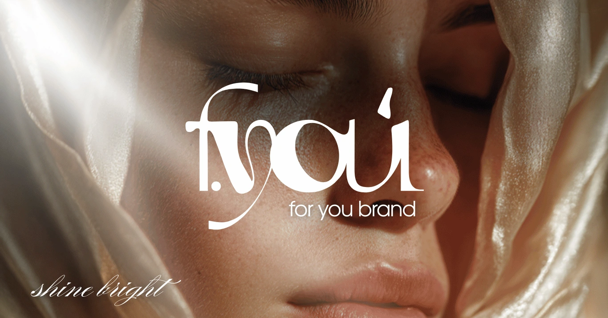
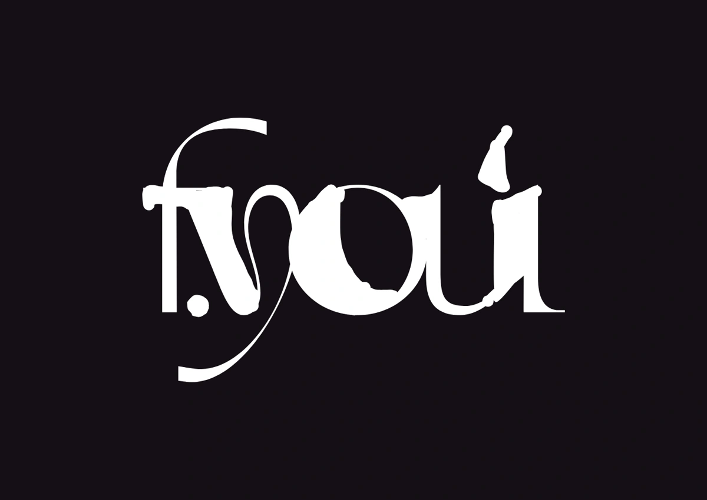
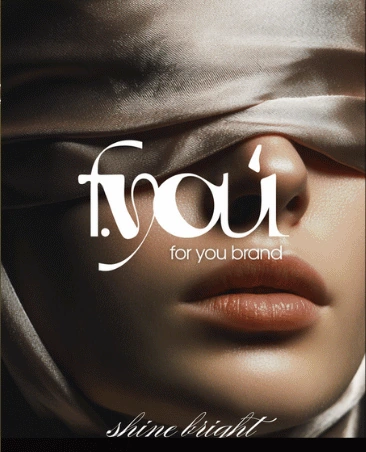
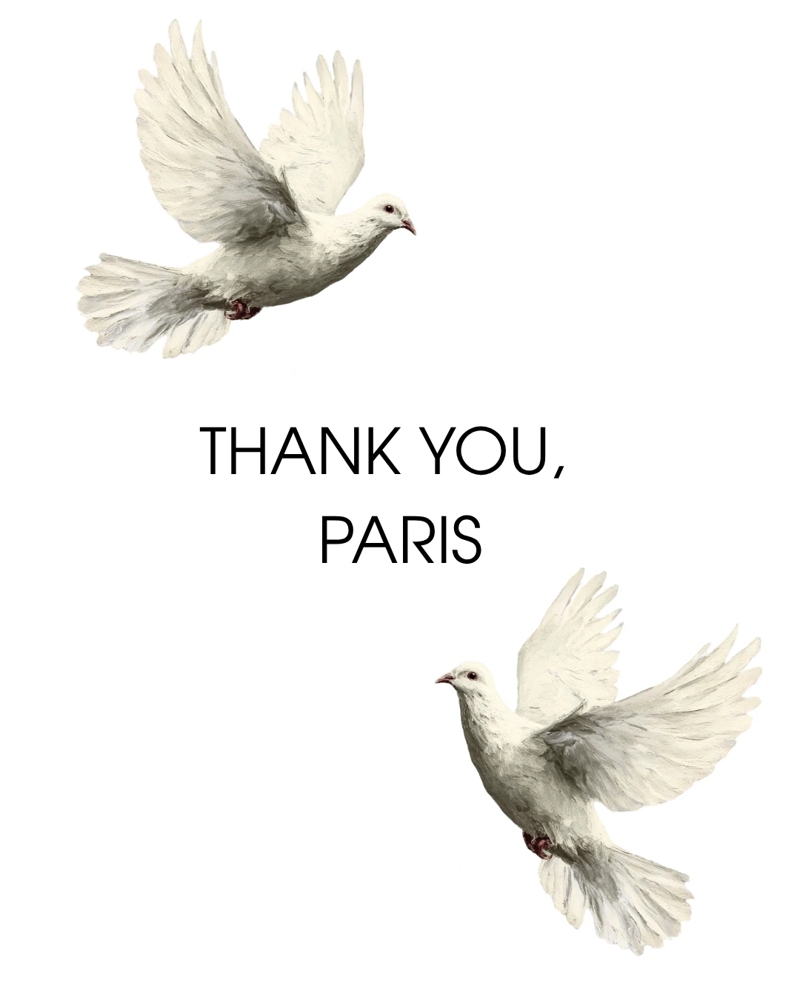
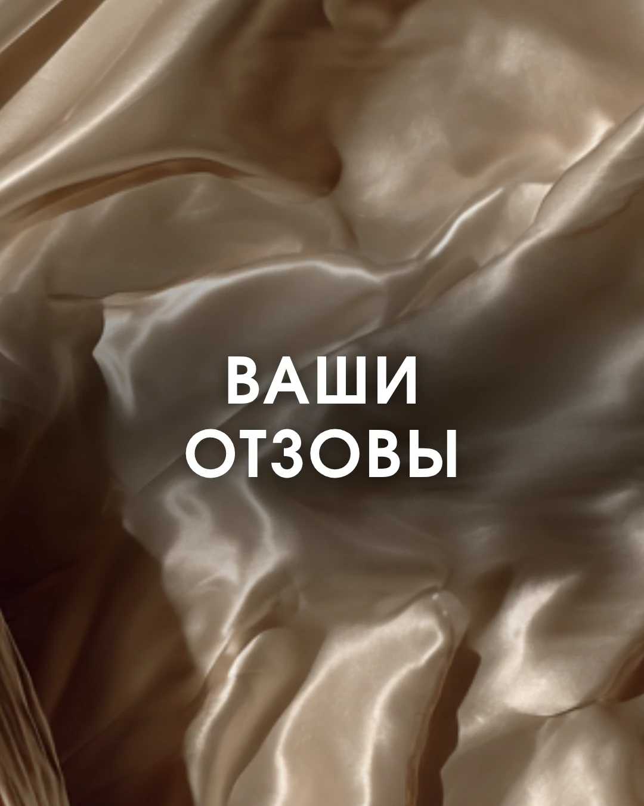

FOR YOU.
Визуальная айдентика бренда одежды. Авторский логотип, фирменная графика и оформление — от этикетки до соцсетей.


Один образ.
От знака до публикации.
FOR YOU — бренд одежды, для которого я создала логотип и визуальную айдентику. Работа объединила фирменные фоны, композиции с птицами, оформление носителей и материалы для соцсетей.
В основе визуального языка — молочные оттенки, оливковый цвет, золотистые детали и мягкие складки ткани. Эти элементы связывают упаковку, графику и digital-материалы в одну историю.
Пластика букв.
Узнаваемый характер.
Авторское начертание и подпись for you brand. Чёрная, светлая и золотистая версии для разных фонов и носителей.


Мягкость ткани.
Выразительность деталей.
Молочные оттенки, приглушённый оливковый, золотистые акценты и голуби. Типографика и фотографии складываются в цельный образ бренда.



Знак бренда.
В тактильных деталях.
Пакет, текстильная этикетка, бирка и карточка благодарности. Светлые материалы и чёрная или золотистая версия логотипа объединяют носители.


Дизайн и визуализации носителей из авторской презентации проекта.
Тот же характер.
В ленте бренда.
Оформление соцсетей продолжает айдентику: графика с птицами, фактурные фоны, работа с фотографией и типографикой.

